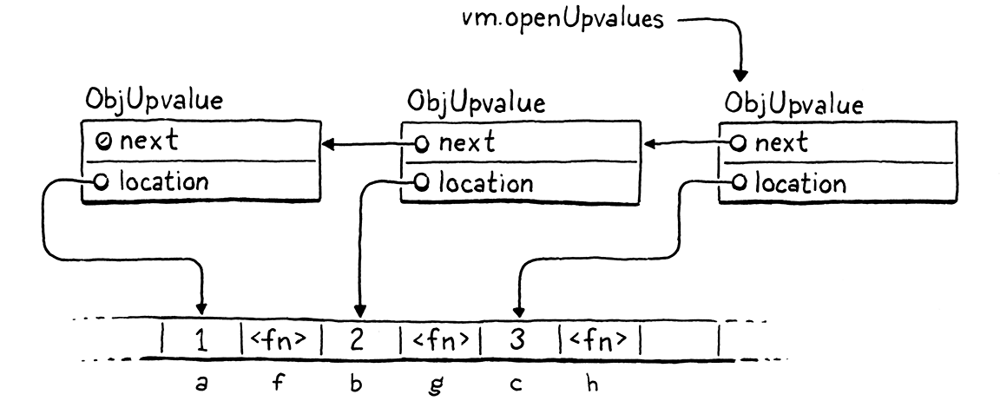

Fermetures
Comme l’homme l’a dit, pour chaque problème complexe il y a une solution simple, et elle est fausse.
Umberto Eco, Le Pendule de Foucault
Grâce à notre travail diligent dans le dernier chapitre, nous avons une machine virtuelle avec des fonctions fonctionnelles. Ce qui lui manque, ce sont les fermetures (closures). À part les variables globales, qui sont leur propre race d’animal, une fonction n’a aucun moyen de référencer une variable déclarée en dehors de son propre corps.
var x = "global"; fun outer() { var x = "outer"; fun inner() { print x; } inner(); } outer();
Exécutez cet exemple maintenant et il affiche “global”. Il est supposé afficher “outer”. Pour corriger cela, nous devons inclure la portée lexicale entière de toutes les fonctions environnantes lors de la résolution d’une variable.
Ce problème est plus difficile dans clox qu’il ne l’était dans jlox parce que notre VM à bytecode stocke les locales sur une pile. Nous avons utilisé une pile parce que j’ai prétendu que les locales ont une sémantique de pile—les variables sont jetées dans l’ordre inverse de leur création. Mais avec les fermetures, c’est seulement surtout vrai.
fun makeClosure() { var local = "local"; fun closure() { print local; } return closure; } var closure = makeClosure(); closure();
La fonction extérieure makeClosure() déclare une variable, local. Elle crée aussi une fonction intérieure, closure() qui capture cette variable. Ensuite makeClosure() renvoie une référence à cette fonction. Puisque la fermeture s’échappe tout en tenant la variable locale, local doit survivre à l’appel de fonction où elle a été créée.
Nous pourrions résoudre ce problème en allouant dynamiquement la mémoire pour toutes les variables locales. C’est ce que jlox fait en mettant tout dans ces objets Environment qui flottent dans le tas de Java. Mais nous ne voulons pas. Utiliser une pile est vraiment rapide. La plupart des variables locales ne sont pas capturées par des fermetures et ont bien une sémantique de pile. Cela craindrait de rendre toutes celles-là plus lentes pour le bénéfice de la rare locale qui est capturée.
Cela signifie une approche plus complexe que celle que nous avons utilisée dans notre interpréteur Java. Parce que certaines locales ont des durées de vie très différentes, nous aurons deux stratégies d’implémentation. Pour les locales qui ne sont pas utilisées dans des fermetures, nous les garderons juste comme elles sont sur la pile. Quand une locale est capturée par une fermeture, nous adopterons une autre solution qui les soulève sur le tas où elles peuvent vivre aussi longtemps que nécessaire.
Les fermetures sont là depuis les premiers jours de Lisp quand les octets de mémoire et les cycles CPU étaient plus précieux que des émeraudes. Au cours des décennies intermédiaires, les hackers ont conçu toute sorte de moyens de compiler les fermetures vers des représentations runtime optimisées. Certaines sont plus efficaces mais requièrent un processus de compilation plus complexe que nous pourrions facilement adapter dans clox.
La technique que j’explique ici vient de la conception de la VM Lua. Elle est rapide, parcimonieuse avec la mémoire, et implémentée avec relativement peu de code. Encore plus impressionnant, elle s’adapte naturellement dans les compilateurs à une seule passe que clox et Lua utilisent tous deux. Elle est quelque peu complexe, cependant. Cela pourrait prendre un moment avant que toutes les pièces s’emboîtent ensemble dans votre esprit. Nous les construirons une étape à la fois, et j’essaierai d’introduire les concepts par étapes.
25 . 1Objets Fermeture
Notre VM représente les fonctions à l’exécution utilisant ObjFunction. Ces objets sont créés par le front end durant la compilation. À l’exécution, tout ce que la VM fait est de charger l’objet fonction depuis une table de constantes et le lier à un nom. Il n’y a pas d’opération pour “créer” une fonction à l’exécution. Tout comme les littéraux chaînes et nombres, ce sont des constantes instanciées purement à la compilation.
Cela avait du sens parce que toutes les données qui composent une fonction sont connues à la compilation : le morceau de bytecode compilé depuis le corps de la fonction, et les constantes utilisées dans le corps. Une fois que nous introduisons les fermetures, cependant, cette représentation n’est plus suffisante. Jetez un coup d’œil à :
fun makeClosure(value) { fun closure() { print value; } return closure; } var doughnut = makeClosure("doughnut"); var bagel = makeClosure("bagel"); doughnut(); bagel();
La fonction makeClosure() définit et renvoie une fonction. Nous l’appelons deux fois et obtenons deux fermetures en retour. Elles sont créées par la même déclaration de fonction imbriquée, closure, mais ferment sur des valeurs différentes. Quand nous appelons les deux fermetures, chacune affiche une chaîne différente. Cela implique que nous avons besoin de quelque représentation runtime pour une fermeture qui capture les variables locales entourant la fonction telles qu’elles existent quand la déclaration de fonction est exécutée, pas juste quand elle est compilée.
Nous travaillerons notre chemin jusqu’à capturer les variables, mais une bonne première étape est de définir cette représentation objet. Notre type ObjFunction existant représente l’état “brut” à la compilation d’une déclaration de fonction, puisque toutes les fermetures créées depuis une seule déclaration partagent le même code et constantes. À l’exécution, quand nous exécutons une déclaration de fonction, nous enveloppons l’ObjFunction dans une nouvelle structure ObjClosure. Cette dernière a une référence vers la fonction nue sous-jacente avec l’état runtime pour les variables sur lesquelles la fonction ferme.

Nous envelopperons chaque fonction dans une ObjClosure, même si la fonction ne ferme pas réellement sur et capture aucune variable locale environnante. C’est un peu “gaspilleur”, mais cela simplifie la VM parce que nous pouvons toujours supposer que la fonction que nous appelons est une ObjClosure. Cette nouvelle structure commence comme ceci :
add after struct ObjString
typedef struct { Obj obj; ObjFunction* function; } ObjClosure;
Juste maintenant, elle pointe simplement vers une ObjFunction et ajoute les trucs d’en-tête d’objet nécessaires. Mèlant à travers la cérémonie habituelle pour ajouter un nouveau type d’objet à clox, nous déclarons une fonction C pour créer une nouvelle fermeture.
} ObjClosure;
add after struct ObjClosure
ObjClosure* newClosure(ObjFunction* function);
ObjFunction* newFunction();
Ensuite nous l’implémentons ici :
add after allocateObject()
ObjClosure* newClosure(ObjFunction* function) { ObjClosure* closure = ALLOCATE_OBJ(ObjClosure, OBJ_CLOSURE); closure->function = function; return closure; }
Elle prend un appel vers l’ObjFunction qu’elle enveloppe. Elle initialise aussi le champ type à un nouveau type.
typedef enum {
in enum ObjType
OBJ_CLOSURE,
OBJ_FUNCTION,
Et quand nous avons fini avec une fermeture, nous relâchons sa mémoire.
switch (object->type) {
in freeObject()
case OBJ_CLOSURE: { FREE(ObjClosure, object); break; }
case OBJ_FUNCTION: {
Nous libérons seulement l’ObjClosure elle-même, pas l’ObjFunction. C’est parce que la fermeture ne possède pas la fonction. Il peut y avoir de multiples fermetures qui référencent toutes la même fonction, et aucune d’elles ne réclame de privilège spécial sur elle. Nous ne pouvons pas libérer l’ObjFunction jusqu’à ce que tous les objets la référençant soient partis—incluant même la fonction environnante dont la table de constantes la contient. Suivre cela semble délicat, et ça l’est ! C’est pourquoi nous écrirons un ramasse-miettes bientôt pour le gérer pour nous.
Nous avons aussi les macros habituelles pour vérifier le type d’une valeur.
#define OBJ_TYPE(value) (AS_OBJ(value)->type)
#define IS_CLOSURE(value) isObjType(value, OBJ_CLOSURE)
#define IS_FUNCTION(value) isObjType(value, OBJ_FUNCTION)
Et pour caster une valeur :
#define IS_STRING(value) isObjType(value, OBJ_STRING)
#define AS_CLOSURE(value) ((ObjClosure*)AS_OBJ(value))
#define AS_FUNCTION(value) ((ObjFunction*)AS_OBJ(value))
Les fermetures sont des objets de première classe, donc vous pouvez les afficher.
switch (OBJ_TYPE(value)) {
in printObject()
case OBJ_CLOSURE: printFunction(AS_CLOSURE(value)->function); break;
case OBJ_FUNCTION:
Elles s’affichent exactement comme ObjFunction le fait. De la perspective de l’utilisateur, la différence entre ObjFunction et ObjClosure est purement un détail d’implémentation caché. Avec cela hors du chemin, nous avons une représentation fonctionnelle mais vide pour les fermetures.
25 . 1 . 1Compiler vers des objets fermeture
Nous avons des objets fermeture, mais notre VM ne les crée jamais. L’étape suivante est d’obtenir du compilateur qu’il émette des instructions pour dire au runtime quand créer une nouvelle ObjClosure pour envelopper une ObjFunction donnée. Cela arrive juste à la fin d’une déclaration de fonction.
ObjFunction* function = endCompiler();
in function()
replace 1 line
emitBytes(OP_CLOSURE, makeConstant(OBJ_VAL(function)));
}
Avant, le bytecode final pour une déclaration de fonction était une seule instruction OP_CONSTANT pour charger la fonction compilée depuis la table de constantes de la fonction environnante et l’empiler sur la pile. Maintenant nous avons une nouvelle instruction.
OP_CALL,
in enum OpCode
OP_CLOSURE,
OP_RETURN,
Comme OP_CONSTANT, elle prend un seul opérande qui représente un index de table de constantes pour la fonction. Mais quand nous arrivons à l’implémentation runtime, nous faisons quelque chose de plus intéressant.
D’abord, soyons des hackers de VM diligents et insérons le support du désassembleur pour l’instruction.
case OP_CALL:
return byteInstruction("OP_CALL", chunk, offset);
in disassembleInstruction()
case OP_CLOSURE: { offset++; uint8_t constant = chunk->code[offset++]; printf("%-16s %4d ", "OP_CLOSURE", constant); printValue(chunk->constants.values[constant]); printf("\n"); return offset; }
case OP_RETURN:
Il y a plus se passant ici que ce que nous avons habituellement dans le désassembleur. À la fin du chapitre, vous découvrirez que OP_CLOSURE est une instruction assez inhabituelle. C’est direct pour l’instant—juste un opérande d’un seul octet—mais nous y ajouterons. Ce code ici anticipe ce futur.
25 . 1 . 2Interpréter les déclarations de fonction
La plupart du travail que nous avons besoin de faire est dans le runtime. Nous devons gérer la nouvelle instruction, naturellement. Mais nous avons aussi besoin de toucher chaque morceau de code dans la VM qui travaille avec ObjFunction et le changer pour utiliser ObjClosure à la place—appels de fonction, cadres d’appel, etc. Nous commencerons avec l’instruction, cependant.
}
in run()
case OP_CLOSURE: { ObjFunction* function = AS_FUNCTION(READ_CONSTANT()); ObjClosure* closure = newClosure(function); push(OBJ_VAL(closure)); break; }
case OP_RETURN: {
Comme l’instruction OP_CONSTANT que nous utilisions avant, d’abord nous chargeons la fonction compilée depuis la table de constantes. La différence maintenant est que nous enveloppons cette fonction dans une nouvelle ObjClosure et empilons le résultat sur la pile.
Une fois que vous avez une fermeture, vous voudrez éventuellement l’appeler.
switch (OBJ_TYPE(callee)) {
in callValue()
replace 2 lines
case OBJ_CLOSURE: return call(AS_CLOSURE(callee), argCount);
case OBJ_NATIVE: {
Nous retirons le code pour appeler les objets dont le type est OBJ_FUNCTION. Puisque nous enveloppons toutes les fonctions dans des ObjClosures, le runtime n’essaiera jamais d’invoquer une ObjFunction nue désormais. Ces objets vivent seulement dans les tables de constantes et sont immédiatement enveloppés dans des fermetures avant que quoi que ce soit d’autre les voie.
Nous remplaçons le vieux code avec un code très similaire pour appeler une fermeture à la place. La seule différence est le type d’objet que nous passons à call(). Les vrais changements sont là-bas dans cette fonction. D’abord, nous mettons à jour sa signature.
function call()
replace 1 line
static bool call(ObjClosure* closure, int argCount) {
if (argCount != function->arity) {
Ensuite, dans le corps, nous avons besoin de réparer tout ce qui référençait la fonction pour gérer le fait que nous avons introduit une couche d’indirection. Nous commençons avec la vérification d’arité :
static bool call(ObjClosure* closure, int argCount) {
in call()
replace 3 lines
if (argCount != closure->function->arity) { runtimeError("Expected %d arguments but got %d.", closure->function->arity, argCount);
return false;
Le seul changement est que nous déballons la fermeture pour obtenir la fonction sous-jacente. La prochaine chose que call() fait est de créer une nouvelle CallFrame. Nous changeons ce code pour stocker la fermeture dans la CallFrame et obtenir le pointeur de bytecode depuis la fonction de la fermeture.
CallFrame* frame = &vm.frames[vm.frameCount++];
in call()
replace 2 lines
frame->closure = closure; frame->ip = closure->function->chunk.code;
frame->slots = vm.stackTop - argCount - 1;
Cela nécessite de changer la déclaration de CallFrame aussi.
typedef struct {
in struct CallFrame
replace 1 line
ObjClosure* closure;
uint8_t* ip;
Ce changement déclenche quelques autres changements en cascade. Chaque endroit dans la VM qui accédait à la fonction de CallFrame a besoin d’utiliser une fermeture à la place. D’abord, la macro pour lire une constante depuis la table de constantes de la fonction courante :
(uint16_t)((frame->ip[-2] << 8) | frame->ip[-1]))
in run()
replace 2 lines
#define READ_CONSTANT() \ (frame->closure->function->chunk.constants.values[READ_BYTE()])
#define READ_STRING() AS_STRING(READ_CONSTANT())
Quand DEBUG_TRACE_EXECUTION est activé, il a besoin d’obtenir le morceau (chunk) depuis la fermeture.
printf("\n");
in run()
replace 2 lines
disassembleInstruction(&frame->closure->function->chunk, (int)(frame->ip - frame->closure->function->chunk.code));
#endif
De même lors du rapport d’une erreur d’exécution :
CallFrame* frame = &vm.frames[i];
in runtimeError()
replace 1 line
ObjFunction* function = frame->closure->function;
size_t instruction = frame->ip - function->chunk.code - 1;
Presque là. La dernière pièce est le blob de code qui configure la toute première CallFrame pour commencer à exécuter le code de niveau supérieur pour un script Lox.
push(OBJ_VAL(function));
in interpret()
replace 1 line
ObjClosure* closure = newClosure(function); pop(); push(OBJ_VAL(closure)); call(closure, 0);
return run();
Le compilateur renvoie toujours une ObjFunction brute lors de la compilation d’un script. C’est bien, mais cela signifie que nous devons l’envelopper dans une ObjClosure ici, avant que la VM puisse l’exécuter.
Nous sommes de retour à un interpréteur fonctionnel. L’utilisateur ne peut voir aucune différence, mais le compilateur génère maintenant du code disant à la VM de créer une fermeture pour chaque déclaration de fonction. Chaque fois que la VM exécute une déclaration de fonction, elle enveloppe l’ObjFunction dans une nouvelle ObjClosure. Le reste de la VM gère maintenant ces ObjClosures flottant autour. C’est le truc ennuyeux hors du chemin. Maintenant nous sommes prêts à faire que ces fermetures fassent réellement quelque chose.
25 . 2Upvalues
Nos instructions existantes pour lire et écrire les variables locales sont limitées à la fenêtre de pile d’une seule fonction. Les locales d’une fonction environnante sont en dehors de la fenêtre de la fonction intérieure. Nous allons avoir besoin de quelques nouvelles instructions.
L’approche la plus facile pourrait être une instruction qui prend un décalage d’emplacement de pile relatif qui peut atteindre avant la fenêtre de la fonction courante. Cela fonctionnerait si les variables fermées étaient toujours sur la pile. Mais comme nous l’avons vu plus tôt, ces variables survivent parfois à la fonction où elles sont déclarées. Cela signifie qu’elles ne seront pas toujours sur la pile.
L’approche suivante la plus facile, alors, serait de prendre toute variable locale qui est fermée (closed over) et de l’avoir toujours vivant sur le tas. Quand la déclaration de variable locale dans la fonction environnante est exécutée, la VM allouerait de la mémoire pour elle dynamiquement. De cette façon elle pourrait vivre aussi longtemps que nécessaire.
Ce serait une bonne approche si clox n’avait pas un compilateur à une seule passe. Mais cette restriction que nous avons choisie dans notre implémentation rend les choses plus difficiles. Jetez un œil à cet exemple :
fun outer() { var x = 1; // (1) x = 2; // (2) fun inner() { // (3) print x; } inner(); }
Ici, le compilateur compile la déclaration de x à (1) et émet du code pour l’assignation à (2). Il fait cela avant d’atteindre la déclaration de inner() à (3) et de découvrir que x est en fait fermée. Nous n’avons pas un moyen facile de revenir en arrière et corriger ce code déjà émis pour traiter x spécialement. Au lieu de cela, nous voulons une solution qui permet à une variable fermée de vivre sur la pile exactement comme une variable locale normale jusqu’au point qu’elle soit fermée.
Heureusement, grâce à l’équipe de dev Lua, nous avons une solution. Nous utilisons un niveau d’indirection qu’ils appellent une upvalue. Une upvalue se réfère à une variable locale dans une fonction englobante. Chaque fermeture maintient un tableau d’upvalues, une pour chaque variable locale environnante que la fermeture utilise.
L’upvalue pointe en arrière dans la pile vers où la variable qu’elle a capturée vit. Quand la fermeture a besoin d’accéder à une variable fermée, elle passe par l’upvalue correspondante pour l’atteindre. Quand une déclaration de fonction est d’abord exécutée et que nous créons une fermeture pour elle, la VM crée le tableau d’upvalues et les câble pour “capturer” les variables locales environnantes dont la fermeture a besoin.
Par exemple, si nous jetons ce programme à clox,
{
var a = 3;
fun f() {
print a;
}
}
le compilateur et le runtime conspireront ensemble pour construire un ensemble d’objets en mémoire comme ceci :

Cela pourrait sembler écrasant, mais n’ayez crainte. Nous travaillerons notre chemin à travers. La partie importante est que les upvalues servent comme la couche d’indirection nécessaire pour continuer à trouver une variable locale capturée même après qu’elle bouge hors de la pile. Mais avant que nous arrivions à tout ça, concentrons-nous sur la compilation des variables capturées.
25 . 2 . 1Compiler les upvalues
Comme d’habitude, nous voulons faire autant de travail que possible durant la compilation pour garder l’exécution simple et rapide. Puisque les variables locales sont lexicalement portées dans Lox, nous avons assez de connaissance à la compilation pour résoudre quelles variables locales environnantes une fonction accède et où ces locales sont déclarées. Cela, à son tour, signifie que nous savons combien d’upvalues une fermeture a besoin, quelles variables elles capturent, et quels emplacements de pile contiennent ces variables dans la fenêtre de pile de la fonction déclaratrice.
Actuellement, quand le compilateur résout un identifiant, il marche les portées de bloc pour la fonction courante de la plus intérieure à la plus extérieure. Si nous ne trouvons pas la variable dans cette fonction, nous supposons que la variable doit être une globale. Nous ne considérons pas les portées locales des fonctions englobantes—elles sont sautées juste au-dessus. Le premier changement, alors, est d’insérer une étape de résolution pour ces portées locales extérieures.
if (arg != -1) {
getOp = OP_GET_LOCAL;
setOp = OP_SET_LOCAL;
in namedVariable()
} else if ((arg = resolveUpvalue(current, &name)) != -1) { getOp = OP_GET_UPVALUE; setOp = OP_SET_UPVALUE;
} else {
Cette nouvelle fonction resolveUpvalue() cherche une variable locale déclarée dans n’importe laquelle des fonctions environnantes. Si elle en trouve une, elle renvoie un “index d’upvalue” pour cette variable. (Nous entrerons dans ce que cela signifie plus tard.) Sinon, elle renvoie -1 pour indiquer que la variable n’a pas été trouvée. Si elle a été trouvée, nous utilisons ces deux nouvelles instructions pour lire ou écrire à la variable à travers son upvalue :
OP_SET_GLOBAL,
in enum OpCode
OP_GET_UPVALUE, OP_SET_UPVALUE,
OP_EQUAL,
Nous implémentons ce genre de haut en bas, donc je vous montrerai comment celles-ci fonctionnent à l’exécution bientôt. La partie sur laquelle se concentrer maintenant est comment le compilateur résout réellement l’identifiant.
add after resolveLocal()
static int resolveUpvalue(Compiler* compiler, Token* name) { if (compiler->enclosing == NULL) return -1; int local = resolveLocal(compiler->enclosing, name); if (local != -1) { return addUpvalue(compiler, (uint8_t)local, true); } return -1; }
Nous appelons ceci après avoir échoué à résoudre une variable locale dans la portée de la fonction courante, donc nous savons que la variable n’est pas dans le compilateur courant. Rappelez-vous que Compiler stocke un pointeur vers le Compiler pour la fonction englobante, et ces pointeurs forment une chaîne liée qui va tout le chemin au Compiler racine pour le code de niveau supérieur. Ainsi, si le Compiler englobant est NULL, nous savons que nous avons atteint la fonction la plus extérieure sans trouver une variable locale. La variable doit être globale, donc nous renvoyons -1.
Sinon, nous essayons de résoudre l’identifiant comme une variable locale dans le compilateur englobant. En d’autres termes, nous la cherchons juste en dehors de la fonction courante. Par exemple :
fun outer() { var x = 1; fun inner() { print x; // (1) } inner(); }
Lors de la compilation de l’expression identifiant à (1), resolveUpvalue() cherche une variable locale x déclarée dans outer(). Si trouvée—comme elle l’est dans cet exemple—alors nous avons résolu avec succès la variable. Nous créons une upvalue pour que la fonction intérieure puisse accéder à la variable à travers cela. L’upvalue est créée ici :
add after resolveLocal()
static int addUpvalue(Compiler* compiler, uint8_t index, bool isLocal) { int upvalueCount = compiler->function->upvalueCount; compiler->upvalues[upvalueCount].isLocal = isLocal; compiler->upvalues[upvalueCount].index = index; return compiler->function->upvalueCount++; }
Le compilateur garde un tableau de structures upvalue pour suivre les identifiants fermés qu’il a résolus dans le corps de chaque fonction. Rappelez-vous comment le tableau locals du compilateur reflète les index d’emplacement de pile où les locales vivent à l’exécution ? Ce nouveau tableau d’upvalues fonctionne de la même façon. Les index dans le tableau du compilateur correspondent aux index où les upvalues vivront dans l’ObjClosure à l’exécution.
Cette fonction ajoute une nouvelle upvalue à ce tableau. Elle garde aussi la trace du nombre d’upvalues que la fonction utilise. Elle stocke ce compte directement dans l’ObjFunction elle-même parce que nous aurons aussi besoin de ce nombre pour l’utiliser à l’exécution.
Le champ index suit l’index d’emplacement de la variable locale fermée. De cette façon le compilateur sait quelle variable dans la fonction englobante a besoin d’être capturée. Nous reviendrons à ce à quoi ce champ isLocal sert avant trop longtemps. Finalement, addUpvalue() renvoie l’index de l’upvalue créée dans la liste d’upvalues de la fonction. Cet index devient l’opérande aux instructions OP_GET_UPVALUE et OP_SET_UPVALUE.
C’est l’idée de base pour résoudre les upvalues, mais la fonction n’est pas pleinement cuite. Une fermeture peut référencer la même variable dans une fonction environnante de multiples fois. Dans ce cas, nous ne voulons pas gaspiller du temps et de la mémoire à créer une upvalue séparée pour chaque expression identifiant. Pour corriger cela, avant que nous ajoutions une nouvelle upvalue, nous vérifions d’abord pour voir si la fonction a déjà une upvalue qui ferme sur cette variable.
int upvalueCount = compiler->function->upvalueCount;
in addUpvalue()
for (int i = 0; i < upvalueCount; i++) { Upvalue* upvalue = &compiler->upvalues[i]; if (upvalue->index == index && upvalue->isLocal == isLocal) { return i; } }
compiler->upvalues[upvalueCount].isLocal = isLocal;
Si nous trouvons une upvalue dans le tableau dont l’index d’emplacement correspond à celui que nous ajoutons, nous retournons juste cet index d’upvalue et le réutilisons. Sinon, nous tombons à travers et ajoutons la nouvelle upvalue.
Ces deux fonctions accèdent et modifient un tas de nouvel état, donc définissons cela. D’abord, nous ajoutons le compte d’upvalue à ObjFunction.
int arity;
in struct ObjFunction
int upvalueCount;
Chunk chunk;
Nous sommes des programmeurs C consciencieux, donc nous initialisons cela à zéro quand une ObjFunction est d’abord allouée.
function->arity = 0;
in newFunction()
function->upvalueCount = 0;
function->name = NULL;
Dans le compilateur, nous ajoutons un champ pour le tableau d’upvalues.
int localCount;
in struct Compiler
Upvalue upvalues[UINT8_COUNT];
int scopeDepth;
Pour la simplicité, je lui ai donné une taille fixe. Les instructions OP_GET_UPVALUE et OP_SET_UPVALUE encodent un index d’upvalue utilisant un opérande d’un seul octet, donc il y a une restriction sur combien d’upvalues une fonction peut avoir—combien de variables uniques elle peut fermer. Étant donné cela, nous pouvons nous permettre un tableau statique aussi grand. Nous devons aussi nous assurer que le compilateur ne déborde pas cette limite.
if (upvalue->index == index && upvalue->isLocal == isLocal) {
return i;
}
}
in addUpvalue()
if (upvalueCount == UINT8_COUNT) { error("Too many closure variables in function."); return 0; }
compiler->upvalues[upvalueCount].isLocal = isLocal;
Finalement, le type struct Upvalue lui-même.
add after struct Local
typedef struct { uint8_t index; bool isLocal; } Upvalue;
Le champ index stocke quel emplacement local l’upvalue capture. Le champ isLocal mérite sa propre section, à laquelle nous arriverons ensuite.
25 . 2 . 2Aplatir les upvalues
Dans l’exemple que j’ai montré avant, la fermeture accède à une variable déclarée dans la fonction immédiatement englobante. Lox supporte aussi d’accéder aux variables locales déclarées dans n’importe quelle portée englobante, comme dans :
fun outer() { var x = 1; fun middle() { fun inner() { print x; } } }
Ici, nous accédons à x dans inner(). Cette variable est définie non pas dans middle(), mais tout là-bas dans outer(). Nous devons gérer des cas comme ceci aussi. Vous pourriez penser que ce n’est pas beaucoup plus dur puisque la variable sera simplement quelque part plus bas sur la pile. Mais considérez cet exemple sournois :
fun outer() { var x = "value"; fun middle() { fun inner() { print x; } print "create inner closure"; return inner; } print "return from outer"; return middle; } var mid = outer(); var in = mid(); in();
Quand vous exécutez ceci, cela devrait afficher :
return from outer create inner closure value
Je sais, c’est alambiqué. La partie importante est que outer()—où x est déclarée—retourne et dépile toutes ses variables de la pile avant que la déclaration de inner() s’exécute. Donc, au moment où nous créons la fermeture pour inner(), x est déjà hors de la pile.
Ici, j’ai tracé le flux d’exécution pour vous :

Voyez comment x est dépilée ① avant qu’elle soit capturée ② et ensuite accédée plus tard ③ ? Nous avons vraiment deux problèmes :
-
Nous devons résoudre les variables locales qui sont déclarées dans les fonctions environnantes au-delà de celle immédiatement englobante.
-
Nous devons être capables de capturer des variables qui ont déjà quitté la pile.
Heureusement, nous sommes au milieu de l’ajout des upvalues à la VM, et les upvalues sont explicitement conçues pour suivre les variables qui ont échappé la pile. Donc, dans un morceau intelligent d’auto-référence, nous pouvons utiliser les upvalues pour permettre aux upvalues de capturer les variables déclarées en dehors de la fonction immédiatement environnante.
La solution est de permettre à une fermeture de capturer soit une variable locale ou une upvalue existante dans la fonction immédiatement englobante. Si une fonction profondément imbriquée référence une variable locale déclarée plusieurs sauts plus loin, nous l’enfilerons à travers toutes les fonctions intermédiaires en ayant chaque fonction capturer une upvalue pour que la fonction suivante l’attrape.

Dans l’exemple ci-dessus, middle() capture la variable locale x dans la fonction immédiatement englobante outer() et la stocke dans sa propre upvalue. Elle fait cela même si middle() elle-même ne référence pas x. Ensuite, quand la déclaration de inner() s’exécute, sa fermeture attrape l’upvalue depuis l’ObjClosure pour middle() qui a capturé x. Une fonction capture—soit une locale ou une upvalue—seulement depuis la fonction immédiatement environnante, qui est garantie d’être encore là au point que la déclaration de fonction intérieure s’exécute.
Afin d’implémenter cela, resolveUpvalue() devient récursive.
if (local != -1) {
return addUpvalue(compiler, (uint8_t)local, true);
}
in resolveUpvalue()
int upvalue = resolveUpvalue(compiler->enclosing, name); if (upvalue != -1) { return addUpvalue(compiler, (uint8_t)upvalue, false); }
return -1;
C’est seulement trois autres lignes de code, mais j’ai trouvé cette fonction vraiment difficile à avoir juste la première fois. Ceci en dépit du fait que je n’inventais rien de nouveau, juste portais le concept depuis Lua. La plupart des fonctions récursives soit font tout leur travail avant l’appel récursif (un parcours pré-ordre, ou “sur la descente”), ou elles font tout le travail après l’appel récursif (un parcours post-ordre, ou “sur la remontée”). Cette fonction fait les deux. L’appel récursif est juste au milieu.
Nous la parcourrons lentement. D’abord, nous cherchons une variable locale correspondante dans la fonction englobante. Si nous en trouvons une, nous capturons cette locale et retournons. C’est le cas de base.
Sinon, nous cherchons une variable locale au-delà de la fonction immédiatement englobante. Nous faisons cela en appelant récursivement resolveUpvalue() sur le compilateur englobant, pas le courant. Cette série d’appels resolveUpvalue() travaille son chemin le long de la chaîne de compilateurs imbriqués jusqu’à ce qu’elle frappe l’un des cas de base—soit elle trouve une variable locale réelle à capturer soit elle tombe à court de compilateurs.
Quand une variable locale est trouvée, l’appel le plus profondément imbriqué à resolveUpvalue() la capture et renvoie l’index d’upvalue. Cela retourne à l’appel suivant pour la déclaration de fonction intérieure. Cet appel capture l’upvalue depuis la fonction environnante, et ainsi de suite. Comme chaque appel imbriqué à resolveUpvalue() retourne, nous forons de retour vers le bas dans la déclaration de fonction la plus intérieure où l’identifiant que nous résolvons apparaît. À chaque étape le long du chemin, nous ajoutons une upvalue à la fonction intervenante et passons l’index d’upvalue résultant vers le bas au prochain appel.
Cela pourrait aider de parcourir l’exemple original lors de la résolution de x :

Notez que le nouvel appel à addUpvalue() passe false pour le paramètre isLocal. Maintenant vous voyez que ce drapeau contrôle si la fermeture capture une variable locale ou une upvalue depuis la fonction environnante.
Au moment où le compilateur atteint la fin d’une déclaration de fonction, chaque référence de variable a été résolue comme soit une locale, une upvalue, ou une globale. Chaque upvalue peut à son tour capturer une variable locale depuis la fonction environnante, ou une upvalue dans le cas de fermetures transitives. Nous avons enfin assez de données pour émettre du bytecode qui crée une fermeture à l’exécution qui capture toutes les variables correctes.
emitBytes(OP_CLOSURE, makeConstant(OBJ_VAL(function)));
in function()
for (int i = 0; i < function->upvalueCount; i++) { emitByte(compiler.upvalues[i].isLocal ? 1 : 0); emitByte(compiler.upvalues[i].index); }
}
L’instruction OP_CLOSURE est unique en ce qu’elle a un encodage de taille variable. Pour chaque upvalue que la fermeture capture, il y a deux opérandes d’un seul octet. Chaque paire d’opérandes spécifie ce que cette upvalue capture. Si le premier octet est un, elle capture une variable locale dans la fonction englobante. Si zéro, elle capture une des upvalues de la fonction. L’octet suivant est l’emplacement local ou l’index d’upvalue à capturer.
Cet encodage bizarre signifie que nous avons besoin de support sur mesure dans le code de désassemblage pour OP_CLOSURE.
printf("\n");
in disassembleInstruction()
ObjFunction* function = AS_FUNCTION(
chunk->constants.values[constant]);
for (int j = 0; j < function->upvalueCount; j++) {
int isLocal = chunk->code[offset++];
int index = chunk->code[offset++];
printf("%04d | %s %d\n",
offset - 2, isLocal ? "local" : "upvalue", index);
}
return offset;
Par exemple, prenez ce script :
fun outer() { var a = 1; var b = 2; fun middle() { var c = 3; var d = 4; fun inner() { print a + c + b + d; } } }
Si nous désassemblons l’instruction qui crée la fermeture pour inner(), elle affiche ceci :
0004 9 OP_CLOSURE 2 <fn inner> 0006 | upvalue 0 0008 | local 1 0010 | upvalue 1 0012 | local 2
Nous avons deux autres instructions, plus simples, pour lesquelles ajouter le support du désassembleur.
case OP_SET_GLOBAL:
return constantInstruction("OP_SET_GLOBAL", chunk, offset);
in disassembleInstruction()
case OP_GET_UPVALUE: return byteInstruction("OP_GET_UPVALUE", chunk, offset); case OP_SET_UPVALUE: return byteInstruction("OP_SET_UPVALUE", chunk, offset);
case OP_EQUAL:
Celles-ci ont toutes deux un opérande d’un seul octet, donc il n’y a rien d’excitant se passant. Nous avons besoin d’ajouter une inclusion pour que le module debug puisse accéder à AS_FUNCTION().
#include "debug.h"
#include "object.h"
#include "value.h"
Avec ça, notre compilateur est où nous le voulons. Pour chaque déclaration de fonction, il sort une instruction OP_CLOSURE suivie par une série de paires d’octets opérandes pour chaque upvalue qu’il a besoin de capturer à l’exécution. Il est temps de sauter de l’autre côté vers la VM et de faire tourner les choses.
25 . 3Objets Upvalue
Chaque instruction OP_CLOSURE est maintenant suivie par la série d’octets qui spécifient les upvalues que l’ObjClosure devrait posséder. Avant que nous traitions ces opérandes, nous avons besoin d’une représentation runtime pour les upvalues.
add after struct ObjString
typedef struct ObjUpvalue { Obj obj; Value* location; } ObjUpvalue;
Nous savons que les upvalues doivent gérer des variables fermées qui ne vivent plus sur la pile, ce qui implique une certaine quantité d’allocation dynamique. La façon la plus facile de faire cela dans notre VM est en construisant sur le système d’objet que nous avons déjà. De cette façon, quand nous implémenterons un ramasse-miettes dans le prochain chapitre, le GC pourra gérer la mémoire pour les upvalues aussi.
Ainsi, notre structure upvalue runtime est une ObjUpvalue avec le champ d’en-tête Obj typique. Suivant cela est un champ location qui pointe vers la variable fermée. Notez que c’est un pointeur vers une Value, pas une Value elle-même. C’est une référence vers une variable, pas une valeur. C’est important parce que cela signifie que quand nous assignons à la variable que l’upvalue capture, nous assignons à la variable réelle, pas une copie. Par exemple :
fun outer() { var x = "before"; fun inner() { x = "assigned"; } inner(); print x; } outer();
Ce programme devrait afficher “assigned” même si la fermeture assigne à x et la fonction environnante y accède.
Parce que les upvalues sont des objets, nous avons toute la machinerie objet habituelle, commençant avec une fonction type constructeur :
ObjString* copyString(const char* chars, int length);
add after copyString()
ObjUpvalue* newUpvalue(Value* slot);
void printObject(Value value);
Elle prend l’adresse de l’emplacement où vit la variable fermée. Voici l’implémentation :
add after copyString()
ObjUpvalue* newUpvalue(Value* slot) { ObjUpvalue* upvalue = ALLOCATE_OBJ(ObjUpvalue, OBJ_UPVALUE); upvalue->location = slot; return upvalue; }
Nous initialisons simplement l’objet et stockons le pointeur. Cela requiert un nouveau type d’objet.
OBJ_STRING,
in enum ObjType
OBJ_UPVALUE
} ObjType;
Et sur le côté arrière, une fonction type destructeur :
FREE(ObjString, object);
break;
}
in freeObject()
case OBJ_UPVALUE: FREE(ObjUpvalue, object); break;
}
De multiples fermetures peuvent fermer sur la même variable, donc ObjUpvalue ne possède pas la variable qu’elle référence. Ainsi, la seule chose à libérer est l’ObjUpvalue elle-même.
Et, finalement, pour afficher :
case OBJ_STRING:
printf("%s", AS_CSTRING(value));
break;
in printObject()
case OBJ_UPVALUE: printf("upvalue"); break;
}
Afficher n’est pas utile aux utilisateurs finaux. Les upvalues sont des objets seulement pour que nous puissions prendre avantage de la gestion de mémoire de la VM. Ce ne sont pas des valeurs de première classe qu’un utilisateur Lox peut directement accéder dans un programme. Donc ce code ne s’exécutera jamais réellement . . . mais il empêche le compilateur de nous crier dessus à propos d’un switch case non géré, donc nous y voilà.
25 . 3 . 1Upvalues dans les fermetures
Quand j’ai d’abord introduit les upvalues, j’ai dit que chaque fermeture en a un tableau. Nous avons finalement travaillé notre chemin de retour pour implémenter cela.
ObjFunction* function;
in struct ObjClosure
ObjUpvalue** upvalues; int upvalueCount;
} ObjClosure;
Différentes fermetures peuvent avoir différents nombres d’upvalues, donc nous avons besoin d’un tableau dynamique. Les upvalues elles-mêmes sont allouées dynamiquement aussi, donc nous finissons avec un double pointeur—un pointeur vers un tableau alloué dynamiquement de pointeurs vers des upvalues. Nous stockons aussi le nombre d’éléments dans le tableau.
Quand nous créons une ObjClosure, nous allouons un tableau d’upvalue de la taille propre, que nous avons déterminée à la compilation et stockée dans l’ObjFunction.
ObjClosure* newClosure(ObjFunction* function) {
in newClosure()
ObjUpvalue** upvalues = ALLOCATE(ObjUpvalue*, function->upvalueCount); for (int i = 0; i < function->upvalueCount; i++) { upvalues[i] = NULL; }
ObjClosure* closure = ALLOCATE_OBJ(ObjClosure, OBJ_CLOSURE);
Avant de créer l’objet fermeture lui-même, nous allouons le tableau d’upvalues et les initialisons toutes à NULL. Cette cérémonie bizarre autour de la mémoire est une danse prudente pour plaire aux (futures) déités du ramasse-miettes. Cela assure que le gestionnaire de mémoire ne voit jamais de mémoire non initialisée.
Ensuite nous stockons le tableau dans la nouvelle fermeture, aussi bien que copions le compte depuis l’ObjFunction.
closure->function = function;
in newClosure()
closure->upvalues = upvalues; closure->upvalueCount = function->upvalueCount;
return closure;
Quand nous libérons une ObjClosure, nous libérons aussi le tableau d’upvalue.
case OBJ_CLOSURE: {
in freeObject()
ObjClosure* closure = (ObjClosure*)object; FREE_ARRAY(ObjUpvalue*, closure->upvalues, closure->upvalueCount);
FREE(ObjClosure, object);
ObjClosure ne possède pas les objets ObjUpvalue eux-mêmes, mais elle possède bien le tableau contenant les pointeurs vers ces upvalues.
Nous remplissons le tableau d’upvalue là-bas dans l’interpréteur quand il crée une fermeture. C’est où nous marchons à travers tous les opérandes après OP_CLOSURE pour voir quel genre d’upvalue chaque emplacement capture.
push(OBJ_VAL(closure));
in run()
for (int i = 0; i < closure->upvalueCount; i++) { uint8_t isLocal = READ_BYTE(); uint8_t index = READ_BYTE(); if (isLocal) { closure->upvalues[i] = captureUpvalue(frame->slots + index); } else { closure->upvalues[i] = frame->closure->upvalues[index]; } }
break;
Ce code est le moment magique où une fermeture prend vie. Nous itérons sur chaque upvalue que la fermeture attend. Pour chacune, nous lisons une paire d’octets opérandes. Si l’upvalue ferme sur une variable locale dans la fonction englobante, nous laissons captureUpvalue() faire le travail.
Sinon, nous capturons une upvalue depuis la fonction environnante. Une instruction OP_CLOSURE est émise à la fin d’une déclaration de fonction. Au moment que nous exécutons cette déclaration, la fonction courante est celle environnante. Cela signifie que la fermeture de la fonction courante est stockée dans la CallFrame au sommet de la pile d’appels. Donc, pour attraper une upvalue depuis la fonction englobante, nous pouvons la lire juste depuis la variable locale frame, qui cache une référence vers cette CallFrame.
Fermer sur une variable locale est plus intéressant. La plupart du travail se passe dans une fonction séparée, mais d’abord nous calculons l’argument à lui passer. Nous avons besoin d’attraper un pointeur vers l’emplacement de la locale capturée dans la fenêtre de pile de la fonction environnante. Cette fenêtre commence à frame->slots, qui pointe vers l’emplacement zéro. Ajouter index décale cela vers l’emplacement local que nous voulons capturer. Nous passons ce pointeur ici :
add after callValue()
static ObjUpvalue* captureUpvalue(Value* local) { ObjUpvalue* createdUpvalue = newUpvalue(local); return createdUpvalue; }
Cela semble un peu bête. Tout ce qu’elle fait est de créer une nouvelle ObjUpvalue qui capture l’emplacement de pile donné et la renvoie. Avions-nous besoin d’une fonction séparée pour cela ? Eh bien, non, pas encore. Mais vous savez que nous allons finir par coller plus de code ici.
D’abord, emballons ce sur quoi nous travaillons. De retour dans le code de l’interpréteur pour gérer OP_CLOSURE, nous finissons éventuellement d’itérer à travers le tableau d’upvalue et initialisons chacune. Quand cela compléte, nous avons une nouvelle fermeture avec un tableau plein d’upvalues pointant vers des variables.
Avec cela en main, nous pouvons implémenter les instructions qui travaillent avec ces upvalues.
}
in run()
case OP_GET_UPVALUE: { uint8_t slot = READ_BYTE(); push(*frame->closure->upvalues[slot]->location); break; }
case OP_EQUAL: {
L’opérande est l’index dans le tableau d’upvalue de la fonction courante. Donc nous cherchons simplement l’upvalue correspondante et déréférençons son pointeur de location pour lire la valeur dans cet emplacement. Régler une variable est similaire.
}
in run()
case OP_SET_UPVALUE: { uint8_t slot = READ_BYTE(); *frame->closure->upvalues[slot]->location = peek(0); break; }
case OP_EQUAL: {
Nous prenons la valeur au sommet de la pile et la stockons dans l’emplacement pointé par l’upvalue choisie. Juste comme avec les instructions pour les variables locales, il est important que ces instructions soient rapides. Les programmes utilisateur lisent et écrivent constamment des variables, donc si c’est lent, tout est lent. Et, comme d’habitude, la façon dont nous les rendons rapides est en les gardant simples. Ces deux nouvelles instructions sont assez bonnes : pas de flux de contrôle, pas d’arithmétique complexe, juste une paire d’indirections de pointeur et un push().
C’est un jalon. Tant que toutes les variables restent sur la pile, nous avons des fermetures fonctionnelles. Essayez ceci :
fun outer() { var x = "outside"; fun inner() { print x; } inner(); } outer();
Exécutez ceci, et cela affiche correctement “outside”.
25 . 4Upvalues fermées
Bien sûr, une fonctionnalité clé des fermetures est qu’elles tiennent la variable aussi longtemps que nécessaire, même après que la fonction qui déclare la variable a retourné. Voici un autre exemple qui devrait fonctionner :
fun outer() { var x = "outside"; fun inner() { print x; } return inner; } var closure = outer(); closure();
Mais si vous l’exécutez juste maintenant . . . qui sait ce qu’elle fait ? À l’exécution, elle finira par lire depuis un emplacement de pile qui ne contient plus la variable fermée. Comme je l’ai mentionné quelques fois, le crux du problème est que les variables dans les fermetures n’ont pas de sémantique de pile. Cela signifie que nous devons les hisser hors de la pile quand la fonction où elles ont été déclarées retourne. Cette section finale du chapitre fait cela.
25 . 4 . 1Valeurs et variables
Avant que nous n’arrivions à écrire du code, je veux creuser dans un point sémantique important. Est-ce qu’une fermeture ferme sur une valeur ou une variable ? Ce n’est pas purement une question académique. Je ne suis pas juste en train de couper les cheveux en quatre. Considérez :
var globalSet; var globalGet; fun main() { var a = "initial"; fun set() { a = "updated"; } fun get() { print a; } globalSet = set; globalGet = get; } main(); globalSet(); globalGet();
La fonction extérieure main() crée deux fermetures et les stocke dans des variables globales pour qu’elles survivent à l’exécution de main() elle-même. Ces deux fermetures capturent la même variable. La première fermeture lui assigne une nouvelle valeur et la seconde fermeture lit la variable.
Qu’est-ce que l’appel à globalGet() affiche ? Si les fermetures capturent des valeurs alors chaque fermeture obtient sa propre copie de a avec la valeur que a avait au point dans le temps que la déclaration de fonction de la fermeture a exécuté. L’appel à globalSet() modifiera la copie de set() de a, mais la copie de get() sera inaffectée. Ainsi, l’appel à globalGet() affichera “initial”.
Si les fermetures ferment sur des variables, alors get() et set() captureront toutes deux—référenceront—la même variable mutable. Quand set() change a, elle change le même a que get() lit. Il n’y a qu’un seul a. Cela, à son tour, implique que l’appel à globalGet() affichera “updated”.
Lequel est-ce ? La réponse pour Lox et la plupart des autres langages que je connais avec des fermetures est la dernière. Les fermetures capturent des variables. Vous pouvez penser à elles comme capturant l’endroit où la valeur vit. C’est important à garder à l’esprit alors que nous traitons avec les variables fermées qui ne sont plus sur la pile. Quand une variable bouge vers le tas, nous avons besoin de nous assurer que toutes les fermetures capturant cette variable retiennent une référence à son seul nouvel emplacement. De cette façon, quand la variable est mutée, toutes les fermetures voient le changement.
25 . 4 . 2Fermer les upvalues
Nous savons que les variables locales commencent toujours sur la pile. C’est plus rapide, et laisse notre compilateur à une seule passe émettre du code avant qu’il découvre que la variable a été capturée. Nous savons aussi que les variables fermées ont besoin de bouger vers le tas si la fermeture survit à la fonction où la variable capturée est déclarée.
Suivant Lua, nous utiliserons upvalue ouverte pour nous référer à une upvalue qui pointe vers une variable locale encore sur la pile. Quand une variable bouge vers le tas, nous fermons l’upvalue et le résultat est, naturellement, une upvalue fermée. Les deux questions auxquelles nous avons besoin de répondre sont :
-
Où sur le tas va la variable fermée ?
-
Quand fermons-nous l’upvalue ?
La réponse à la première question est facile. Nous avons déjà un objet pratique sur le tas qui représente une référence à une variable—ObjUpvalue elle-même. La variable fermée bougera dans un nouveau champ juste à l’intérieur de la structure ObjUpvalue. De cette façon nous n’avons pas besoin de faire d’allocation de tas supplémentaire pour fermer une upvalue.
La seconde question est directe aussi. Tant que la variable est sur la pile, il peut y avoir du code qui s’y réfère là, et ce code doit fonctionner correctement. Donc le moment logique pour hisser la variable vers le tas est aussi tard que possible. Si nous bougeons la variable locale juste quand elle sort de portée, nous sommes certains qu’aucun code après ce point n’essaiera d’y accéder depuis la pile. Après que la variable est hors de portée, le compilateur aura rapporté une erreur si n’importe quel code essayait de l’utiliser.
Le compilateur émet déjà une instruction OP_POP quand une variable locale sort de portée. Si une variable est capturée par une fermeture, nous émettrons à la place une instruction différente pour hisser cette variable hors de la pile et dans son upvalue correspondante. Pour faire cela, le compilateur a besoin de savoir quelles locales sont fermées.
Le compilateur maintient déjà un tableau de structures Upvalue pour chaque variable locale dans la fonction pour suivre exactement cet état. Ce tableau est bon pour répondre “Quelles variables cette fermeture utilise-t-elle ?” Mais il est pauvrement adapté pour répondre, “Est-ce que n’importe quelle fonction capture cette variable locale ?” En particulier, une fois que le Compiler pour quelque fermeture a fini, le Compiler pour la fonction englobante dont la variable a été capturée n’a plus accès à aucun des états d’upvalue.
En d’autres termes, le compilateur maintient des pointeurs depuis les upvalues vers les locales qu’elles capturent, mais pas dans l’autre direction. Donc nous avons d’abord besoin d’ajouter un suivi supplémentaire à l’intérieur de la structure Local existante pour que nous puissions dire si une locale donnée est capturée par une fermeture.
int depth;
in struct Local
bool isCaptured;
} Local;
Ce champ est true si la locale est capturée par n’importe quelle déclaration de fonction imbriquée ultérieure. Initialement, toutes les locales ne sont pas capturées.
local->depth = -1;
in addLocal()
local->isCaptured = false;
}
De même, la “locale d’emplacement zéro” spéciale que le compilateur déclare implicitement n’est pas capturée.
local->depth = 0;
in initCompiler()
local->isCaptured = false;
local->name.start = "";
Lors de la résolution d’un identifiant, si nous finissons par créer une upvalue pour une variable locale, nous la marquons comme capturée.
if (local != -1) {
in resolveUpvalue()
compiler->enclosing->locals[local].isCaptured = true;
return addUpvalue(compiler, (uint8_t)local, true);
Maintenant, à la fin d’une portée de bloc quand le compilateur émet du code pour libérer les emplacements de pile pour les locales, nous pouvons dire lesquelles ont besoin d’être hissées sur le tas. Nous utiliserons une nouvelle instruction pour cela.
while (current->localCount > 0 &&
current->locals[current->localCount - 1].depth >
current->scopeDepth) {
in endScope()
replace 1 line
if (current->locals[current->localCount - 1].isCaptured) { emitByte(OP_CLOSE_UPVALUE); } else { emitByte(OP_POP); }
current->localCount--; }
L’instruction ne requiert pas d’opérande. Nous savons que la variable sera toujours juste au sommet de la pile au point que cette instruction s’exécute. Nous déclarons l’instruction.
OP_CLOSURE,
in enum OpCode
OP_CLOSE_UPVALUE,
OP_RETURN,
Et ajoutons le support trivial du désassembleur pour elle :
}
in disassembleInstruction()
case OP_CLOSE_UPVALUE: return simpleInstruction("OP_CLOSE_UPVALUE", offset);
case OP_RETURN:
Excellent. Maintenant le bytecode généré dit au runtime exactement quand chaque variable locale capturée doit bouger vers le tas. Mieux, il le fait seulement pour les locales qui sont utilisées par une fermeture et ont besoin de ce traitement spécial. Cela s’aligne avec notre but de performance général que nous voulons que les utilisateurs paient seulement pour la fonctionnalité qu’ils utilisent. Les variables qui ne sont pas utilisées par des fermetures vivent et meurent entièrement sur la pile juste comme elles le faisaient avant.
25 . 4 . 3Suivre les upvalues ouvertes
Bougeons de l’autre côté vers le runtime. Avant que nous puissions interpréter les instructions OP_CLOSE_UPVALUE, nous avons un problème à résoudre. Plus tôt, quand j’ai parlé de savoir si les fermetures capturent des variables ou des valeurs, j’ai dit qu’il était important que si de multiples fermetures accèdent à la même variable qu’elles finissent avec une référence vers le même emplacement de stockage exact en mémoire. De cette façon si une fermeture écrit à la variable, l’autre fermeture voit le changement.
Juste maintenant, si deux fermetures capturent la même variable locale, la VM crée une Upvalue séparée pour chacune. Le partage nécessaire est manquant. Quand nous bougeons la variable hors de la pile, si nous la bougeons dans seulement une des upvalues, l’autre upvalue aura une valeur orpheline.
Pour corriger cela, chaque fois que la VM a besoin d’une upvalue qui capture un emplacement de variable locale particulier, nous chercherons d’abord une upvalue existante pointant vers cet emplacement. Si trouvée, nous réutilisons celle-là. Le défi est que toutes les upvalues précédemment créées sont écureuillées à l’intérieur des tableaux d’upvalue des diverses fermetures. Ces fermetures pourraient être n’importe où dans la mémoire de la VM.
La première étape est de donner à la VM sa propre liste de toutes les upvalues ouvertes qui pointent vers des variables encore sur la pile. Chercher une liste chaque fois que la VM a besoin d’une upvalue semble que cela pourrait être lent, mais en pratique, ce n’est pas mauvais. Le nombre de variables sur la pile qui sont réellement fermées tend à être petit. Et les déclarations de fonction qui créent des fermetures sont rarement sur des chemins d’exécution critiques pour la performance dans le programme de l’utilisateur.
Encore mieux, nous pouvons ordonner la liste d’upvalues ouvertes par l’index d’emplacement de pile vers lequel elles pointent. Le cas commun est qu’un emplacement n’a pas déjà été capturé—partager des variables entre des fermetures est peu commun—et les fermetures tendent à capturer des locales près du sommet de la pile. Si nous stockons le tableau d’upvalues ouvertes dans l’ordre des emplacements de pile, aussitôt que nous passons l’emplacement où la locale que nous capturons vit, nous savons qu’elle ne sera pas trouvée. Quand cette locale est près du sommet de la pile, nous pouvons sortir de la boucle assez tôt.
Maintenir une liste triée requiert d’insérer des éléments au milieu efficacement. Cela suggère utiliser une liste chaînée au lieu d’un tableau dynamique. Puisque nous avons défini la structure ObjUpvalue nous-mêmes, l’implémentation la plus facile est une liste intrusive qui met le pointeur suivant juste à l’intérieur de la structure ObjUpvalue elle-même.
Value* location;
in struct ObjUpvalue
struct ObjUpvalue* next;
} ObjUpvalue;
Quand nous allouons une upvalue, elle n’est pas attachée à aucune liste encore donc le lien est NULL.
upvalue->location = slot;
in newUpvalue()
upvalue->next = NULL;
return upvalue;
La VM possède la liste, donc le pointeur de tête va juste à l’intérieur de la structure VM principale.
Table strings;
in struct VM
ObjUpvalue* openUpvalues;
Obj* objects;
La liste commence vide.
vm.frameCount = 0;
in resetStack()
vm.openUpvalues = NULL;
}
Commençant avec la première upvalue pointée par la VM, chaque upvalue ouverte pointe vers la prochaine upvalue ouverte qui référence une variable locale plus bas sur la pile. Ce script, par exemple,
{
var a = 1;
fun f() {
print a;
}
var b = 2;
fun g() {
print b;
}
var c = 3;
fun h() {
print c;
}
}
devrait produire une série d’upvalues liées comme ceci :
Chaque fois que nous fermons sur une variable locale, avant de créer une nouvelle upvalue, nous cherchons une existante dans la liste.
static ObjUpvalue* captureUpvalue(Value* local) {
in captureUpvalue()
ObjUpvalue* prevUpvalue = NULL; ObjUpvalue* upvalue = vm.openUpvalues; while (upvalue != NULL && upvalue->location > local) { prevUpvalue = upvalue; upvalue = upvalue->next; } if (upvalue != NULL && upvalue->location == local) { return upvalue; }
ObjUpvalue* createdUpvalue = newUpvalue(local);
Nous commençons à la tête de la liste, qui est l’upvalue la plus proche du sommet de la pile. Nous parcourons la liste, utilisant une petite comparaison de pointeur pour itérer passé chaque upvalue pointant vers des emplacements au-dessus de celui que nous cherchons. Pendant que nous faisons cela, nous gardons la trace de l’upvalue précédente sur la liste. Nous aurons besoin de mettre à jour le pointeur next de ce nœud si nous finissons par insérer un nœud après lui.
Il y a trois raisons pour lesquelles nous pouvons sortir de la boucle :
-
L’emplacement local auquel nous nous sommes arrêtés est l’emplacement que nous cherchons. Nous avons trouvé une upvalue existante capturant la variable, donc nous réutilisons cette upvalue.
-
Nous sommes tombés à court d’upvalues à chercher. Quand
upvalueestNULL, cela signifie que chaque upvalue ouverte dans la liste pointe vers des locales au-dessus de l’emplacement que nous cherchons, ou (plus probablement) la liste d’upvalues est vide. Dans les deux cas, nous n’avons pas trouvé une upvalue pour notre emplacement. -
Nous avons trouvé une upvalue dont l’emplacement local est en dessous de celui que nous cherchons. Puisque la liste est triée, cela signifie que nous sommes passés au-delà de l’emplacement sur lequel nous fermons, et donc il ne doit pas y avoir d’upvalue existante pour lui.
Dans le premier cas, nous avons fini et nous avons retourné. Sinon, nous créons une nouvelle upvalue pour notre emplacement local et l’insérons dans la liste au bon endroit.
ObjUpvalue* createdUpvalue = newUpvalue(local);
in captureUpvalue()
createdUpvalue->next = upvalue; if (prevUpvalue == NULL) { vm.openUpvalues = createdUpvalue; } else { prevUpvalue->next = createdUpvalue; }
return createdUpvalue;
L’incarnation courante de cette fonction crée déjà l’upvalue, donc nous avons seulement besoin d’ajouter du code pour insérer l’upvalue dans la liste. Nous sommes sortis de la traversée de liste soit en allant après la fin de la liste, soit en s’arrêtant sur la première upvalue dont l’emplacement de pile est en dessous de celui que nous cherchons. Dans les deux cas, cela signifie que nous devons insérer la nouvelle upvalue avant l’objet pointé par upvalue (qui peut être NULL si nous avons frappé la fin de la liste).
Comme vous pouvez l’avoir appris dans Structures de Données 101, pour insérer un nœud dans une liste chaînée, vous réglez le pointeur next du nœud précédent pour pointer vers votre nouveau. Nous avons commodément gardé la trace de ce nœud précédent alors que nous marchions la liste. Nous avons aussi besoin de gérer le cas spécial où nous insérons une nouvelle upvalue à la tête de la liste, auquel cas le pointeur “next” est le pointeur de tête de la VM.
Avec cette fonction mise à jour, la VM assure maintenant qu’il y a seulement toujours une seule ObjUpvalue pour n’importe quel emplacement local donné. Si deux fermetures capturent la même variable, elles obtiendront la même upvalue. Nous sommes prêts à bouger ces upvalues hors de la pile maintenant.
25 . 4 . 4Fermer les upvalues à l’exécution
Le compilateur émet utilement une instruction OP_CLOSE_UPVALUE pour dire à la VM exactement quand une variable locale devrait être hissée sur le tas. Exécuter cette instruction est la responsabilité de l’interpréteur.
}
in run()
case OP_CLOSE_UPVALUE: closeUpvalues(vm.stackTop - 1); pop(); break;
case OP_RETURN: {
Quand nous atteignons l’instruction, la variable que nous hissons est juste au sommet de la pile. Nous appelons une fonction aide, passant l’adresse de cet emplacement de pile. Cette fonction est responsable de fermer l’upvalue et bouger la locale de la pile vers le tas. Après cela, la VM est libre de jeter l’emplacement de pile, ce qu’elle fait en appelant pop().
Le truc amusant se passe ici :
add after captureUpvalue()
static void closeUpvalues(Value* last) { while (vm.openUpvalues != NULL && vm.openUpvalues->location >= last) { ObjUpvalue* upvalue = vm.openUpvalues; upvalue->closed = *upvalue->location; upvalue->location = &upvalue->closed; vm.openUpvalues = upvalue->next; } }
Cette fonction prend un pointeur vers un emplacement de pile. Elle ferme chaque upvalue ouverte qu’elle peut trouver qui pointe vers cet emplacement ou n’importe quel emplacement au-dessus de lui sur la pile. Juste maintenant, nous passons un pointeur seulement vers l’emplacement du sommet sur la pile, donc la partie “ou au-dessus” n’entre pas en jeu, mais elle le fera bientôt.
Pour faire cela, nous marchons la liste des upvalues ouvertes de la VM, encore de haut en bas. Si l’emplacement d’une upvalue pointe dans la plage d’emplacements que nous fermons, nous fermons l’upvalue. Sinon, une fois que nous atteignons une upvalue en dehors de la plage, nous savons que le reste le sera aussi, donc nous arrêtons d’itérer.
La façon dont une upvalue devient fermée est assez cool. D’abord, nous copions la valeur de la variable dans le champ closed dans l’ObjUpvalue. C’est où les variables fermées vivent sur le tas. Les instructions OP_GET_UPVALUE et OP_SET_UPVALUE ont besoin de chercher la variable là après qu’elle a été bougée. Nous pourrions ajouter quelque logique conditionnelle dans le code de l’interpréteur pour ces instructions pour vérifier quelque drapeau pour si l’upvalue est ouverte ou fermée.
Mais il y a déjà un niveau d’indirection en jeu—ces instructions déréférencent le pointeur location pour arriver à la valeur de la variable. Quand la variable bouge de la pile au champ closed, nous mettons simplement à jour cette location à l’adresse du propre champ closed de l’ObjUpvalue.

Nous n’avons pas besoin de changer comment OP_GET_UPVALUE et OP_SET_UPVALUE sont interprétées du tout. Cela les garde simples, ce qui à son tour les garde rapides. Nous avons besoin d’ajouter le nouveau champ à ObjUpvalue, cependant.
Value* location;
in struct ObjUpvalue
Value closed;
struct ObjUpvalue* next;
Et nous devrions le mettre à zéro quand nous créons une ObjUpvalue pour qu’il n’y ait pas de mémoire non initialisée flottant autour.
ObjUpvalue* upvalue = ALLOCATE_OBJ(ObjUpvalue, OBJ_UPVALUE);
in newUpvalue()
upvalue->closed = NIL_VAL;
upvalue->location = slot;
Chaque fois que le compilateur atteint la fin d’un bloc, il se débarrasse de toutes les variables locales dans ce bloc et émet une OP_CLOSE_UPVALUE pour chaque variable locale qui a été fermée. Le compilateur n’émet pas d’instructions à la fin de la portée de bloc la plus extérieure qui définit un corps de fonction. Cette portée contient les paramètres de la fonction et toutes locales déclarées immédiatement à l’intérieur de la fonction. Celles-là ont besoin d’être fermées aussi.
C’est la raison pour laquelle closeUpvalues() accepte un pointeur vers un emplacement de pile. Quand une fonction retourne, nous appelons cette même aide et passons le premier emplacement de pile possédé par la fonction.
Value result = pop();
in run()
closeUpvalues(frame->slots);
vm.frameCount--;
En passant le premier emplacement dans la fenêtre de pile de la fonction, nous fermons chaque upvalue ouverte restante possédée par la fonction retournante. Et avec ça, nous avons maintenant une implémentation de fermeture pleinement fonctionnelle. Les variables fermées vivent aussi longtemps qu’elles sont nécessaires par les fonctions qui les capturent.
C’était beaucoup de travail ! Dans jlox, les fermetures tombaient naturellement de notre représentation d’environnement. Dans clox, nous avons dû ajouter beaucoup de code—de nouvelles instructions bytecode, plus de structures de données dans le compilateur, et de nouveaux objets runtime. La VM traite vraiment les variables dans les fermetures différemment des autres variables.
Il y a une rationalité pour cela. En termes de complexité d’implémentation, jlox nous a donné les fermetures “pour gratuit”. Mais en termes de performance, les fermetures de jlox sont tout sauf. En allouant tous les environnements sur le tas, jlox paie un prix de performance significatif pour toutes les variables locales, même la majorité qui ne sont jamais capturées par des fermetures.
Avec clox, nous avons un système plus complexe, mais qui nous permet d’adapter l’implémentation pour correspondre aux deux patrons d’utilisation que nous observons pour les variables locales. Pour la plupart des variables qui ont bien une sémantique de pile, nous les allouons entièrement sur la pile ce qui est simple et rapide. Ensuite, pour les quelques variables locales où cela ne fonctionne pas, nous avons un second chemin plus lent auquel nous pouvons opter comme nécessaire.
Heureusement, les utilisateurs ne perçoivent pas la complexité. De leur perspective, les variables locales dans Lox sont simples et uniformes. Le langage lui-même est aussi simple que l’implémentation de jlox. Mais sous le capot, clox regarde ce que l’utilisateur fait et optimise pour ses usages spécifiques. Comme vos implémentations de langage grandissent en sophistication, vous vous trouverez à faire cela plus. Une grande fraction de l’“optimisation” est à propos d’ajouter du code pour des cas spéciaux qui détecte certains usages et fournit un chemin sur mesure, plus rapide pour le code qui correspond à ce patron.
Nous avons la portée lexicale pleinement fonctionnelle dans clox maintenant, ce qui est un jalon majeur. Et, maintenant que nous avons des fonctions et des variables avec des durées de vie complexes, nous avons aussi beaucoup d’objets flottant dans le tas de clox, avec une toile de pointeurs les liant ensemble. L’étape suivante est de comprendre comment gérer cette mémoire pour que nous puissions libérer certains de ces objets quand ils ne sont plus nécessaires.
25 . 5Défis
-
Envelopper chaque ObjFunction dans une ObjClosure introduit un niveau d’indirection qui a un coût de performance. Ce coût n’est pas nécessaire pour les fonctions qui ne ferment sur aucune variable, mais il laisse le runtime traiter tous les appels uniformément.
Changez clox pour envelopper seulement les fonctions dans des ObjClosures qui ont besoin d’upvalues. Comment la complexité du code et la performance se comparent-elles à toujours envelopper les fonctions ? Prenez soin de benchmarker des programmes qui utilisent et n’utilisent pas de fermetures. Comment devriez-vous pondérer l’importance de chaque benchmark ? Si l’un devient plus lent et l’autre plus rapide, comment décidez-vous quel compromis faire pour choisir une stratégie d’implémentation ?
-
Lisez la note de conception ci-dessous. J’attendrai. Maintenant, comment pensez-vous que Lox devrait se comporter ? Changez l’implémentation pour créer une nouvelle variable pour chaque itération de boucle.
-
Un koan célèbre nous enseigne que “les objets sont la fermeture du pauvre” (et vice versa). Notre VM ne supporte pas les objets encore, mais maintenant que nous avons des fermetures nous pouvons les approximer. Utilisant des fermetures, écrivez un programme Lox qui modélise des “objets” vecteur à deux dimensions. Il devrait :
-
Définir une fonction “constructeur” pour créer un nouveau vecteur avec les coordonnées x et y données.
-
Fournir des “méthodes” pour accéder aux coordonnées x et y des valeurs renvoyées par ce constructeur.
-
Définir une “méthode” addition qui ajoute deux vecteurs et produit un troisième.
-
25 . 6Note de Conception : Fermer sur la Variable de Boucle
Les fermetures capturent des variables. Quand deux fermetures capturent la même variable, elles partagent une référence au même emplacement de stockage sous-jacent. Ce fait est visible quand de nouvelles valeurs sont assignées à la variable. Évidemment, si deux fermetures capturent des variables différentes, il n’y a pas de partage.
var globalOne; var globalTwo; fun main() { { var a = "one"; fun one() { print a; } globalOne = one; } { var a = "two"; fun two() { print a; } globalTwo = two; } } main(); globalOne(); globalTwo();
Ceci affiche “one” puis “two”. Dans cet exemple, il est assez clair que les deux variables a sont différentes. Mais ce n’est pas toujours si évident. Considérez :
var globalOne; var globalTwo; fun main() { for (var a = 1; a <= 2; a = a + 1) { fun closure() { print a; } if (globalOne == nil) { globalOne = closure; } else { globalTwo = closure; } } } main(); globalOne(); globalTwo();
Le code est alambiqué parce que Lox n’a pas de types collection. La partie importante est que la fonction main() fait deux itérations d’une boucle for. Chaque fois à travers la boucle, elle crée une fermeture qui capture la variable de boucle. Elle stocke la première fermeture dans globalOne et la seconde dans globalTwo.
Il y a définitivement deux fermetures différentes. Fermet-elles sur deux variables différentes ? Y a-t-il seulement un a pour la durée entière de la boucle, ou chaque itération obtient-elle sa propre variable a distincte ?
Le script ici est étrange et artificiel, mais cela apparaît dans le vrai code dans des langages qui ne sont pas aussi minimaux que clox. Voici un exemple JavaScript :
var closures = []; for (var i = 1; i <= 2; i++) { closures.push(function () { console.log(i); }); } closures[0](); closures[1]();
Est-ce que cela affiche “1” puis “2”, ou est-ce que cela affiche “3” deux fois ? Vous pouvez être surpris d’entendre que cela affiche “3” deux fois. Dans ce programme JavaScript, il y a seulement une seule variable i dont la durée de vie inclut toutes les itérations de la boucle, incluant la sortie finale.
Si vous êtes familier avec JavaScript, vous savez probablement que les variables déclarées utilisant var sont implicitement hissées à la fonction environnante ou portée de niveau supérieur. C’est comme si vous aviez réellement écrit ceci :
var closures = []; var i; for (i = 1; i <= 2; i++) { closures.push(function () { console.log(i); }); } closures[0](); closures[1]();
À ce point, il est plus clair qu’il n’y a qu’un seul i. Maintenant considérez si vous changez le programme pour utiliser le mot-clé let plus récent :
var closures = []; for (let i = 1; i <= 2; i++) { closures.push(function () { console.log(i); }); } closures[0](); closures[1]();
Est-ce que ce nouveau programme se comporte de même ? Non. Dans ce cas, il affiche “1” puis “2”. Chaque fermeture obtient sa propre i. C’est sorte d’étrange quand vous y pensez. Le clause d’incrément est i++. Cela ressemble beaucoup comme si c’était assigner à et muter une variable existante, pas en créer une nouvelle.
Essayons quelques autres langages. Voici Python :
closures = [] for i in range(1, 3): closures.append(lambda: print(i)) closures[0]() closures[1]()
Python n’a pas vraiment de portée de bloc. Les variables sont implicitement déclarées et sont automatiquement portées à la fonction environnante. Sorte de comme le hissage dans JS, maintenant que j’y pense. Donc les deux fermetures capturent la même variable. Contrairement au C, cependant, nous ne sortons pas de la boucle en incrémentant i passé la dernière valeur, donc ceci affiche “2” deux fois.
Qu’en est-il de Ruby ? Ruby a deux façons typiques d’itérer numériquement. Voici le style impératif classique :
closures = [] for i in 1..2 do closures << lambda { puts i } end closures[0].call closures[1].call
Ceci, comme Python, affiche “2” deux fois. Mais le style Ruby plus idiomatique utilise une méthode d’ordre supérieur each() sur des objets plage :
closures = [] (1..2).each do |i| closures << lambda { puts i } end closures[0].call closures[1].call
Si vous n’êtes pas familier avec Ruby, la partie do |i| ... end est basiquement une fermeture qui est créée et passée à la méthode each(). Le |i| est la signature de paramètre pour la fermeture. La méthode each() invoque cette fermeture deux fois, passant 1 pour i la première fois et 2 la seconde fois.
Dans ce cas, la “variable de boucle” est réellement un paramètre de fonction. Et, puisque chaque itération de la boucle est une invocation séparée de la fonction, ce sont définitivement des variables séparées pour chaque appel. Donc ceci affiche “1” puis “2”.
Si un langage a une structure de boucle basée-itérateur de plus haut niveau comme foreach en C#, le “enhanced for” de Java, for-of en JavaScript, for-in en Dart, etc., alors je pense qu’il est naturel pour le lecteur d’avoir chaque itération créer une nouvelle variable. Le code ressemble à une nouvelle variable parce que l’en-tête de boucle ressemble à une déclaration de variable. Et il n’y a pas d’expression d’incrément qui ressemble à ce qu’elle mute cette variable pour avancer à l’étape suivante.
Si vous creusez autour de StackOverflow et d’autres endroits, vous trouvez des preuves que c’est ce que les utilisateurs attendent, parce qu’ils sont très surpris quand ils ne l’obtiennent pas. En particulier, C# à l’origine ne créait pas une nouvelle variable de boucle pour chaque itération d’une boucle foreach. C’était une source si fréquente de confusion utilisateur qu’ils ont pris l’étape très rare de livrer un changement cassant au langage. Dans C# 5, chaque itération crée une variable fraîche.
Les vieilles boucles for style C sont plus dures. La clause d’incrément ressemble vraiment bien à une mutation. Cela implique qu’il y a une seule variable qui est mise à jour à chaque étape. Mais il est presque jamais utile pour chaque itération de partager une variable de boucle. Le seul moment où vous pouvez même détecter cela est quand des fermetures la capturent. Et c’est rarement utile d’avoir une fermeture qui référence une variable dont la valeur est n’importe quelle valeur qui vous a causé de sortir de la boucle.
La réponse pragmatiquement utile est probablement de faire ce que JavaScript fait avec let dans les boucles for. Faites-le ressembler à de la mutation mais créez réellement une nouvelle variable chaque fois, parce que c’est ce que les utilisateurs veulent. C’est un peu bizarre quand vous y pensez, cependant.